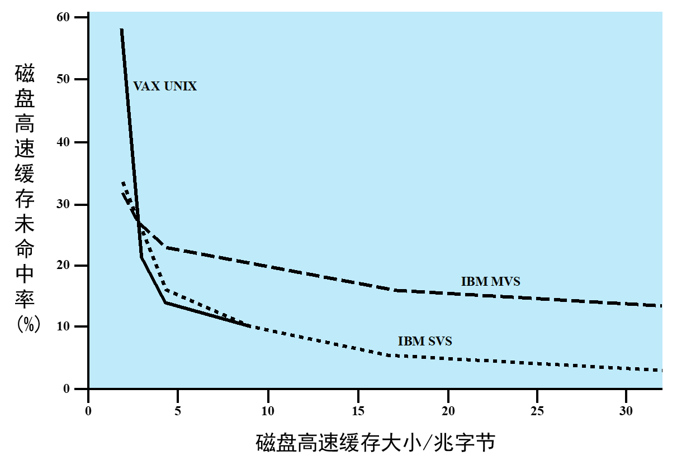

I/O管理与磁盘调度
本文最后更新于：February 14, 2023 pm
I/O管理与磁盘调度
I/O管理
I/O设备概述
外设分类:
- 按信息传输方向:
- 输入设备: 从外部向计算机输入信息，如：键盘、鼠标、扫描仪等
- 输出设备:从计算机向外部输出信息，如：打印机、显示器等
- 输入输出设备: 既可输入又可输出，如：带触屏的显示器、磁盘存储器等
- 按功能:
- 人-机交互设备:输入/输出的信息是人可读的，或可操作的。如: 键盘、鼠标、扫描仪、打印机、显示器等
- 外部存储设备: 用于信息的存储(其输入/出的信息是机器可读的)。如: 磁盘、磁带、光盘等
- 主机间通信设备: 主要用于计算机和计算机之间的通信。如: 网卡、调制解调器、A/D、D/A等

- 电缆: 通过电缆与计算机内部I/O接口进行数据、状态和控制信息的传送。电缆线中包括控制信号、状态信号和数据信号三种信号线
- 控制逻辑: 根据控制信息控制设备的操作并检测设备状态
- 缓冲器: 用于保存与计算机交换的数据信息
- 变换器: 用于实现电信号形式与其他形式的设备数据之间的转换
所有外部设备均可抽象为该模型
I/O控制方式
I/O设备与主机进行数据交换的三种基本方式:
- 程序直接控制方式:
- 无条件传送: 对简单外设定时同步进行数据传送
- 条件传送: 轮询方式，OS主动查询，I/O设备将自己的状态放到一个状态寄存器中，OS阶段性的查询状态寄存器中的特定状态以决定下一步动作。
- 中断方式: 几乎所有系统都支持的方式
- 当一个I/O设备需要CPU的干预时，他通过中断请求来通知CPU
- CPU中止当前程序的执行，调出OS中断处理程序来执行
- 处理完成后返回到中止的程序继续执行
- DMA方式: 磁盘等高速外设成批的直接和主存进行数据交换
三种方式的详细说明在计组的互连及输入输出组织
I/O通道控制方式
I/O通道: 是DMA方式的发展，有自己的I/O指令集，通过执行通道程序，与设备控制器共同实现对I/O设备的控制
与DMA方式的不同:
- DMA以一个数据块为数据读写单位，I/O通道以一组数据块为数据读写单位
- DMA中CPU控制传输方向、数据大小、数据在内存的位置，I/O通道自己控制传输方向、数据大小、数据在内存的位置
因此I/O通道可实现CPU、I/O通道和I/O设备三者的并行操作，从而更有效地提高整个系统的资源利用率
一个设备可以连接到多个控制器上，而一个控制器又连接到多个通道上
I/O功能组织模型
操作系统的功能可以根据复杂性、特征时间尺度(time scale)和层次的抽象来分开，每一层执行相关的子功能，分层定义，使得某层的功能变化不影响其他层次
- 逻辑I/O: 把设备当作逻辑资源处理，不关心控制设备的细节
- 设备I/O: 请求的操作和数据被转换成对应的I/O指令、通道指令和控制器指令，并可以使用缓冲提高效率
- 调度和控制: 与硬件真正发生交互的软件层，处理中断，收集和报告I/O状态
典型I/O功能组织模型的设计结构:
- 通信架构
- 文件系统

I/O缓冲
缓冲: 操作系统在内存中给I/O请求分配一个缓冲区
缓冲的作用:
- 缓解I/O设备速度与CPU速度不匹配的矛盾，进程的需求大于I/O设备的服务能力时，进程每处理完一块数据后得停下等待
- 在多道程序环境中，当存在多种I/O活动和多种进程活动时，缓冲可以提高操作系统效率，提高单个进程的性能
缓冲缓解I/O设备速度与CPU速度不匹配的原理:
- 在输入请求发出前开始输入传送
- 在输出请求发出后一段时间后才开始执行输出传送
I/O设备传输方式分类:

- 面向块的设备: 以数据块为传输单位，采用DMA或I/O通道方式控制I/O，传送完一块或一组数据才中断
- 面向流的设备: 以字节、字或一行为传输单位，采用中断驱动的I/O控制方式，每传送完一个字节、一个字或一行就产生中断
以下均为输入，输出同理
无缓冲时，应用程序直接访问I/O设备，需要等设备将数据传送到内存，再计算，每块数据处理时间为: T + C
单缓冲时，应用程序从缓冲区拿数据，计算数据时，下一块数据正在传送到缓冲区，因此影响处理时间的为计算时间和传送时间中较大的那个，取走数据后才能将数据输入到缓冲区，因此要加上取数据时间，每块数据处理时间为: Max(T, C) + M
双缓冲时，应用程序从缓冲区拿数据，在应用程序从一个缓冲区取数据时，另一个缓冲区可以开始传送新数据，因此影响处理时间的为计算时间和传送时间中较大的那个，每块数据处理时间为: Max(T, M + C)
循环缓冲: 使用两个或多个缓冲区构成循环缓冲，当希望I/O操作跟上进程执行速度时，使用循环缓冲，原理与双缓冲相同
SPOOLing
SPOOLing(Simultaneous Peripheral Operating On Line, 假脱机操作)技术: 在磁盘中建立I/O缓冲区(上一节为内存缓冲)，缓和CPU的高速性与I/O设备低速性间的矛盾
同时通过SPOOLing技术便可将一台独占物理I/O设备虚拟为多台逻辑I/O设备，从而允许多个用户共享一台物理I/O设备
SPOOL结构:
- 输入/输出进程: 应用程序，需求使用I/O设备进行输入/输出
- 输入井/输出井: 磁盘上的一块空间
- 输入缓冲区/输出缓冲区: 内存中一块空间
SPOOLing思想:
- 输入:
- 将用户需要数据通过输入设备送到输入缓冲区
- 将输入缓冲区内的数据送到输入井
- 当CPU需要数据时，将数据从输入井送到内存中(不是输入缓冲区，是应用程序自己的内存)
- 输出:
- 将用户需要输出的数据送到输出井中
- 当输出设备空闲时，将输出井数据送到输出缓冲区中
- 将输出缓冲区数据输出到输出设备中
SPOOLing技术分析:
- 通过SPOOLing技术，对应用程序而言，与I/O设备直接打交道的的低速提升到了与磁盘打交道的相对高速来
- 同时，没有为任何进程实际分配设备，只是在输入井/输出井中为进程分配一个存储区和建立一张I/O请求表，因此将独占设备改造为共享设备
- 在输入井/输出井中可以进行排队，一台独占物理设备变换为若干台逻辑设备，因此实现了虚拟设备功能
磁盘调度
磁盘结构
- 磁盘设备可包括一或多个物理盘片，每个磁盘片分一个或两个盘面(surface)
- 每个磁盘面被组织成若干个同心环，这种环称为磁道(track)
- 每条磁道逻辑上划分成若干个扇区(sectors)
- 不同盘面相同的磁道成为柱面(cylinder)
磁盘性能参数
读写数据流程:
- 寻道: 磁头径向移动到指定的磁道
- 旋转: 在磁头固定不动的情况下，盘片旋转直到扇区在磁头下停止
- 读写: 通过载体运动产生感应电压从而进行读取数据或磁头加电流进行写操作
因此平均存取时间: T = 平均寻道时间 + 平均旋转等待时间 + 数据传输时间
寻道时间: 在磁头可移动系统中，将磁头臂移动到指定磁道所需的时间，一般由生产商给出
旋转等待时间: 将待访问的扇区移动到磁头位置所花时间称为旋转时间，可由转速计算得到
r为转速，单位为rps
例如对于一个转速为3600r/m的硬盘而言，其每旋转一周的时间为16.6ms，其平均旋转延迟为8.3ms
数据传输时间: 向磁盘传送或从磁盘传送数据的时间，取决于磁盘的转速和一个磁道的字节数
b为要传送的字节数，r为旋转速度，N为一个磁道中的字节数
例题:
考虑一个典型的磁盘，平均寻道时间为4ms，转速为7500r/m，每个磁道有500个扇区，每个扇区有512个字节。假设有一个文件存放在2500个扇区上，估算下列两种情况下读取该文件需要的时间
(1)2500个扇区分别位于5个相邻磁道上，且文件按扇区顺序存放
(2)2500个扇区随机分布
答:
转速 = 7500r/m = 125r/s
(1): 转一圈需要，2500个扇区分别在相邻的5个磁道上，因此寻道只需要一次共4ms，每个磁道均需要旋转到起始位置，旋转时间为，总共5个磁道共需要，每个磁道需要8ms来传输共，因此总时间
(2): 2500个扇区随机分布，因此每个扇区均需要寻道共需要，每个扇区均需要旋转到起始位置，总共2500个扇区共需要，每个扇区的读写时间为，共2500个扇区需要，因此总时间
磁盘调度
FIFO
思想: 根据进程请求访问磁盘的先后顺序，处理队列中的访问需求

PRI
思想: 调度的控制不属于磁盘管理软件的范畴，目标不是优化磁盘的利用，而是满足操作系统的其他需求
LIFO
思想: Last In First Out，优先处理新到请求，大量请求到达导致磁盘忙碌时，会出现先到请求的饥饿
SSTF
思想: Shortest Service Time First，选择最短寻道时间的请求(选择离磁头最近的磁道)
SCAN
思想: 扫描式寻道，磁头只沿着一个方向移动，在移动途中满足所有未完成的请求，直到到达移动方向的尽头(改进为在这个方向上没有其他请求则是LOOK)，然后掉头，沿反方向扫描

C-SCAN
思想: Circular SCAN，与SCAN相同，但限定只朝一个方向扫描，即在沿指定方向扫描到磁盘最后一个磁道时，磁臂返回到反方向末端(改进为返回到反方向第一个有请求的磁道则是C-LOOK)，再次沿指定方向扫描
N-Step-SCAN
SSTF、SCAN和C-SCAN具有磁头臂黏着现象： 当一个或多个进程对同一个磁道有较高访问速度时，磁头臂黏在相应磁道上不移动
N-Step-SCAN将磁盘访问请求序列分为若干个子队列，每个子队列的长度为N，每次使用SCAN方法处理一个队列
当前队列正在处理时，新到的访问请求必须加到其他队列中
- N较大时，性能接近SCAN(但不会出现磁头臂黏着现象)
- N = 1时，就是FIFO
FSCAN
使用两个子队列，当扫描开始时，所有请求都放在一个队列中，另一个队列为空，扫描过程中，新到的请求被放到另外一个队列中，当原来队列里的请求处理完毕时，才会处理另一个队列里的请求
RAID
RAID: 独立磁盘冗余阵列，有0~6不同等级，提供了**容错(fault-tolerance)和逻辑数据备份(logical data redundancy)**技术
RAID0
RAID1
RAID2
RAID3
RAID4
RAID5

RAID6
磁盘cache
cache是通过将高速的存储器放置在CPU内部从而将一部分常用的内存放入其中，进而满足内存低速与CPU高速之间的不平衡
磁盘cache原理相同，是在内存中开辟一块空间，用来放置磁盘某些常用扇区的备份，以平衡内存的高速与磁盘的低速
与cache相同，磁盘cache满后也需要置换算法选择扇区进行置换，磁盘cache最常用LRU和LFU算法
LRU
思想: 位于磁盘高速缓存中最近最少使用的块被换出，是局部性原理的实际运用

LFU
思想: 置换访问次数最少的块，如果一个块短期内被频繁访问，计数器值迅速增加，之后即使长时间不访问，也不会被选作置换对象，因此需要将磁盘cache分区
位于新区中的快访问计数器不会增加，只有老区符合置换条件，中区可以增加自己的访问计数器，增加的快的不会进入老区，也就不会被置换
本博客所有文章除特别声明外，均采用 CC BY-SA 4.0 协议 ，转载请注明出处！